lorenz_partial_additive_mse_uniform_p30_obsnoise001_top3nd_init15_autodim__lc_sweepProject: Lorenz_INDpartial_NDInitSweep_autodim_D1_NormTrue__JacobianODE
Launched: 2026-04-21T22:10:13Z
Completed: 2026-04-22T12:30:31Z
Outcome: complete_clean
Git: latent-JacobianODE @ 3094575
Expected runs: 27
lorenz_partial_additive_mse_uniform_p30_obsnoise001_top3nd_init15_autodim__lc_sweepDescription
Lorenz partial additive coupling, uniform reconstruction loss, obs_noise=0.01, prediction_steps=30, traj_init_steps=15. 27-run sweep: 3 n_delays {55, 60, 70} × 9 LC weights {0, 1e-6, 1e-5, 1e-4, 1e-3, 1e-2, 1e-1, 1, 10}. n_target_dims picked by PCA-auto (threshold=0.99) per n_delays. Goal: test whether the optimum n_delays is stable across LC weight, or whether LC shifts the optimum — a direct check on the two-stage-sweep assumption (best n_delays at LC=0 may not be best n_delays at LC>0, see earlier discussion).
Hypothesis
If the optimum n_delays migrates as LC grows, the two-stage sweep protocol (pick n_delays at LC=0 then sweep LC) is unreliable and we'd need full joint sweeps in future. If the optimum is stable, the two-stage protocol is efficient and we can continue to use it. Separately: at this low-noise setting, expect a soft LC optimum around 1e-4..1e-2 based on prior LC sweeps at n_delays=25 at the same noise level.
Success criteria
Swept axes (11): data.train_test_params.delay_embedding_params.n_delays, model.encoder.init_pca_basis, model.encoder.n_input, model.encoder_only_mode, model.n_target_dims, model.n_target_dims_pca_auto, model.n_target_dims_pca_cum_var, model.params.input_dim, model.params.output_dim, model.trajectory_loss_most_recent, training.lightning.loop_closure_weight
Chosen run (by best_traj_loss): l6f9rzk6 — traj_loss=0.00038, MASE=0.5308, R²=0.9990, LC loss=1.037, epoch=197.0
Swept-axis values at chosen run: data.train_test_params.delay_embedding_params.n_delays=55 · model.encoder.init_pca_basis=False · model.encoder.n_input=55 · model.encoder_only_mode=None · model.n_target_dims=5 · model.n_target_dims_pca_auto=5 · model.n_target_dims_pca_cum_var=0.994855 · model.params.input_dim=5 · model.params.output_dim=25 · model.trajectory_loss_most_recent=True · training.lightning.loop_closure_weight=0
Runs analyzed: 27 (expected 27)
| run_idx | run_id | data.train_test_params.delay_embedding_params.n_delays |
model.encoder.init_pca_basis |
model.encoder.n_input |
model.encoder_only_mode |
model.n_target_dims |
model.n_target_dims_pca_auto |
model.n_target_dims_pca_cum_var |
model.params.input_dim |
model.params.output_dim |
model.trajectory_loss_most_recent |
training.lightning.loop_closure_weight |
best_traj_loss | best_MASE | R² | LC loss | epoch |
|---|---|---|---|---|---|---|---|---|---|---|---|---|---|---|---|---|---|
| 0 | l6f9rzk6 |
55 | False | 55 | None | 5 | 5 | 0.994855 | 5 | 25 | True | 0 | 0.00038 | 0.5308 | 0.9990 | 1.037 | 197.0 |
| 12 | ccvot8j5 |
60 | False | 60 | False | 5 | 5 | 0.993171 | 5 | 25 | True | 1.0e-04 | 0.00040 | 0.5325 | 0.9989 | 0.089 | 144.0 |
| 2 | eyur9uex |
55 | False | 55 | False | 5 | 5 | 0.994855 | 5 | 25 | True | 1.0e-05 | 0.00040 | 0.5457 | 0.9989 | 0.290 | 126.0 |
| 10 | kgfm0hy6 |
60 | False | 60 | None | 5 | 5 | 0.993171 | 5 | 25 | True | 1.0e-06 | 0.00044 | 0.5473 | 0.9988 | 1.910 | 133.0 |
| 4 | yrypeeyh |
55 | False | 55 | False | 5 | 5 | 0.994855 | 5 | 25 | True | 0.001 | 0.00048 | 0.5648 | 0.9987 | 0.011 | 198.0 |
| 13 | sgl4a6p9 |
60 | False | 60 | None | 5 | 5 | 0.993171 | 5 | 25 | True | 0.001 | 0.00056 | 0.6024 | 0.9984 | 0.031 | 127.0 |
| 18 | 7k1kdgp0 |
70 | False | 70 | False | 6 | 6 | 0.994529 | 6 | 36 | True | 0 | 0.00067 | 0.5907 | 0.9982 | 2.073 | 146.0 |
| 5 | x62j5byr |
55 | False | 55 | None | 5 | 5 | 0.994855 | 5 | 25 | True | 0.01 | 0.00077 | 0.6461 | 0.9979 | 0.002 | 166.0 |
| 9 | g6ig1rsm |
60 | None | 60 | None | 5 | 5 | 0.993171 | 5 | 25 | None | 0 | 0.00085 | 0.7177 | 0.9977 | 3.969 | 116.0 |
| 19 | xlnxldo0 |
70 | False | 70 | None | 6 | 6 | 0.994529 | 6 | 36 | True | 1.0e-06 | 0.00088 | 0.6689 | 0.9976 | 1.633 | 95.0 |
| 14 | 76gyhpe1 |
60 | False | 60 | False | 5 | 5 | 0.993171 | 5 | 25 | True | 0.01 | 0.00090 | 0.6764 | 0.9975 | 0.004 | 113.0 |
| 11 | vl219t40 |
60 | None | 60 | None | 5 | 5 | 0.993171 | 5 | 25 | None | 1.0e-05 | 0.00093 | 0.7164 | 0.9975 | 0.421 | 100.0 |
| 22 | 2w94ck0e |
70 | False | 70 | False | 6 | 6 | 0.994529 | 6 | 36 | True | 0.001 | 0.00096 | 0.6753 | 0.9974 | 0.032 | 111.0 |
| 21 | knza6xc2 |
70 | None | 70 | None | 6 | 6 | 0.994529 | 6 | 36 | None | 1.0e-04 | 0.00106 | 0.8099 | 0.9972 | 0.066 | 168.0 |
| 23 | bwfhf7lf |
70 | False | 70 | False | 6 | 6 | 0.994529 | 6 | 36 | True | 0.01 | 0.00128 | 0.7548 | 0.9966 | 0.005 | 101.0 |
| 20 | rifvxbay |
70 | None | 70 | None | 6 | 6 | 0.994529 | 6 | 36 | None | 1.0e-05 | 0.00136 | 0.8919 | 0.9964 | 0.487 | 105.0 |
| 3 | 229ofgpv |
55 | None | 55 | None | 5 | 5 | 0.994855 | 5 | 25 | None | 1.0e-04 | 0.00152 | 0.8438 | 0.9959 | 0.058 | 107.0 |
| 6 | yk2sxjx6 |
55 | None | 55 | None | 5 | 5 | 0.994855 | 5 | 25 | None | 0.1 | 0.00190 | 0.8954 | 0.9949 | 0.000 | 167.0 |
| 1 | qyfxzazt |
55 | None | 55 | None | 5 | 5 | 0.994855 | 5 | 25 | None | 1.0e-06 | 0.00205 | 0.9902 | 0.9945 | 0.788 | 63.0 |
| 15 | sro2qdq3 |
60 | None | 60 | None | 5 | 5 | 0.993171 | 5 | 25 | None | 0.1 | 0.00216 | 0.9497 | 0.9942 | 0.000 | 158.0 |
| 24 | t07oybw5 |
70 | False | 70 | None | 6 | 6 | 0.994529 | 6 | 36 | True | 0.1 | 0.00239 | 0.9594 | 0.9936 | 0.001 | 107.0 |
| 7 | yjz42phd |
55 | False | 55 | False | 5 | 5 | 0.994855 | 5 | 25 | True | 1 | 0.00240 | 0.9286 | 0.9935 | 0.000 | 196.0 |
| 8 | lrtjbb8d |
55 | False | 55 | None | 5 | 5 | 0.994855 | 5 | 25 | True | 10 | 0.00358 | 1.1440 | 0.9903 | 0.000 | 119.0 |
| 16 | 1zjwpxqk |
60 | False | 60 | None | 5 | 5 | 0.993171 | 5 | 25 | True | 1 | 0.00377 | 1.0945 | 0.9899 | 0.000 | 116.0 |
| 17 | 9082oh08 |
60 | False | 60 | False | 5 | 5 | 0.993171 | 5 | 25 | True | 10 | 0.00557 | 1.3671 | 0.9852 | 0.000 | 123.0 |
| 25 | hz822v1x |
70 | False | 70 | False | 6 | 6 | 0.994529 | 6 | 36 | True | 1 | 0.00727 | 1.5368 | 0.9807 | 0.000 | 117.0 |
| 26 | xlsa41f4 |
70 | None | 70 | None | 6 | 6 | 0.994529 | 6 | 36 | None | 10 | 0.01473 | 2.5076 | 0.9610 | 0.000 | 114.0 |
| Criterion | Verdict | Note |
|---|---|---|
| All 27 runs train without divergence | Unknown | |
| Best (val traj_loss) over the grid is achieved at one (n_delays, LC) cell — optimum is identified unambiguously | Unknown | |
| Optimum n_delays is stable across LC (same n_delays wins at its best LC as at LC=0), OR shifts in an interpretable way | Unknown | |
| Best-LC run at the winning n_delays has lc_loss_at_best_tl < 1 (loop closes) | Unknown |
Automated verdicts use simple numeric-threshold parsing and may mis-classify qualitative criteria. The Discussion section below takes precedence.
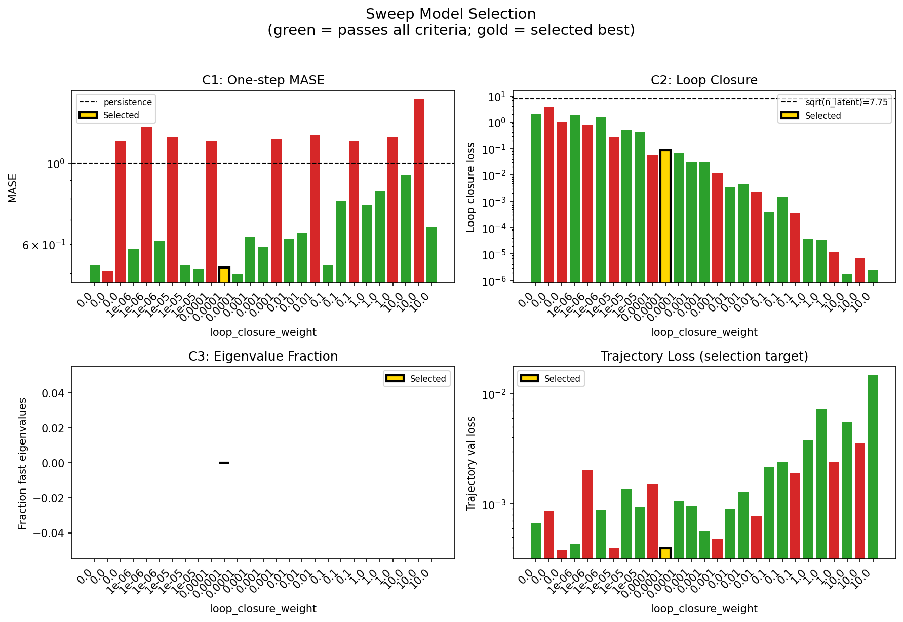
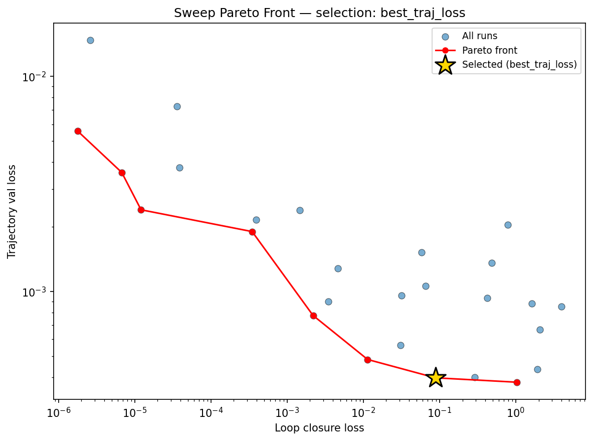
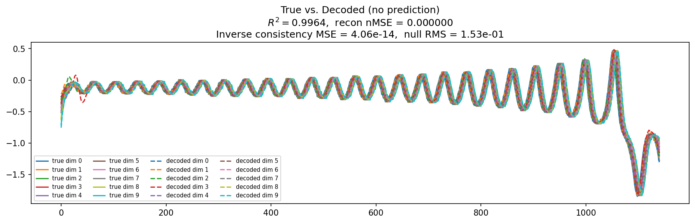
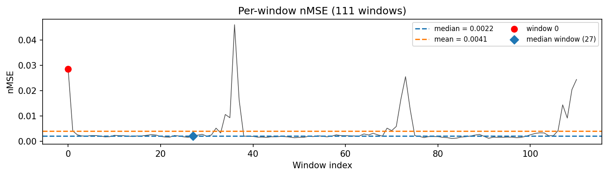
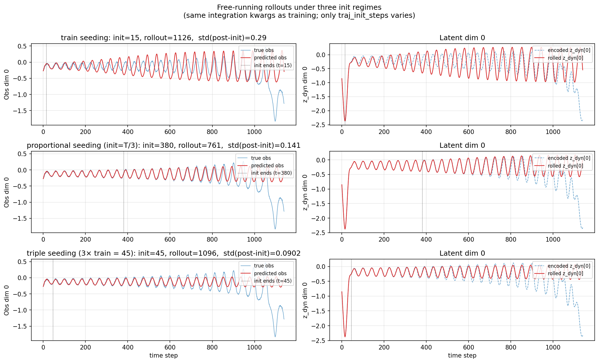
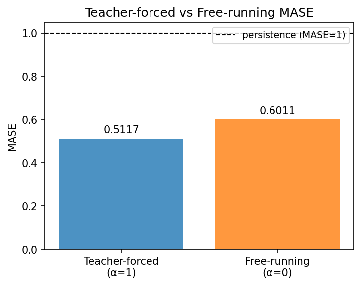
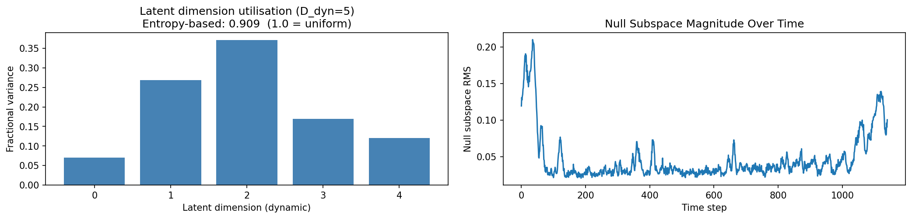
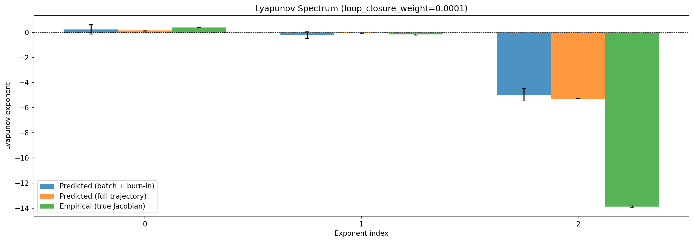
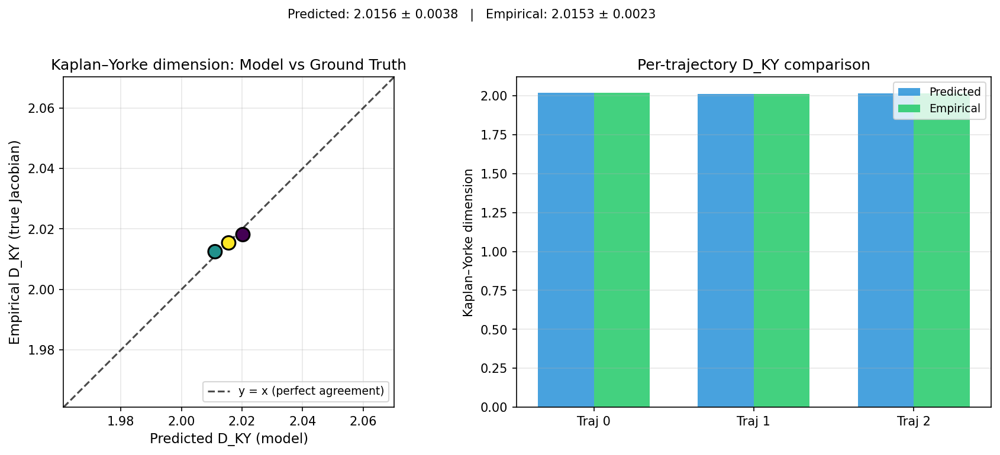
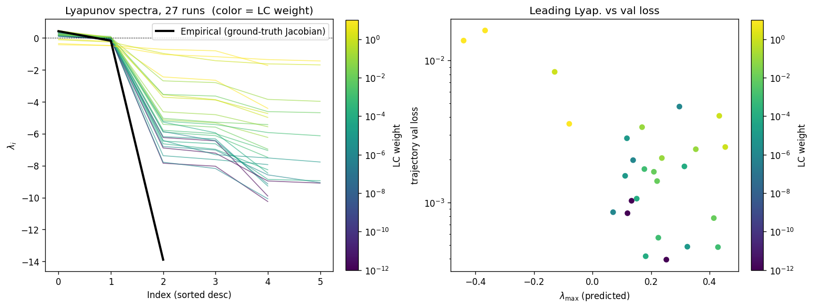
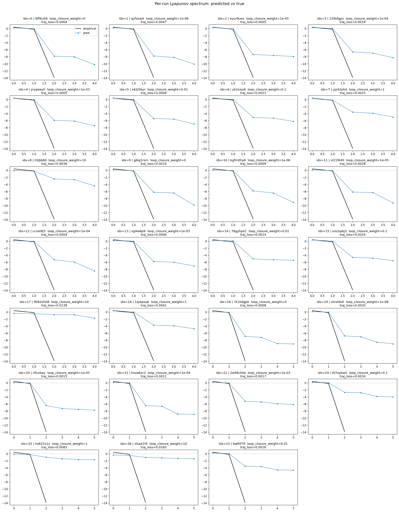
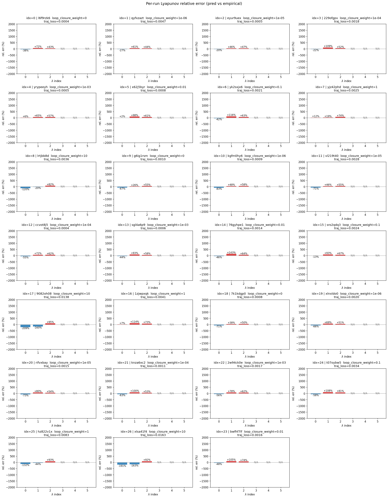
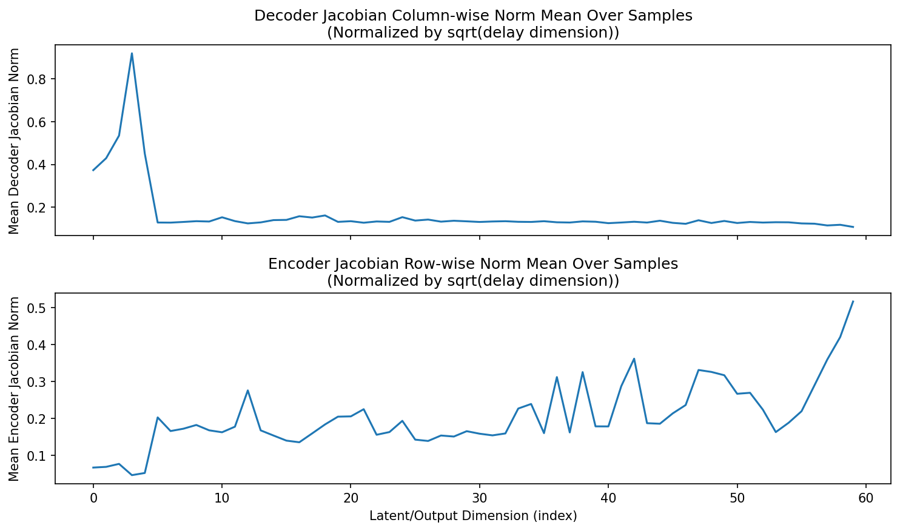
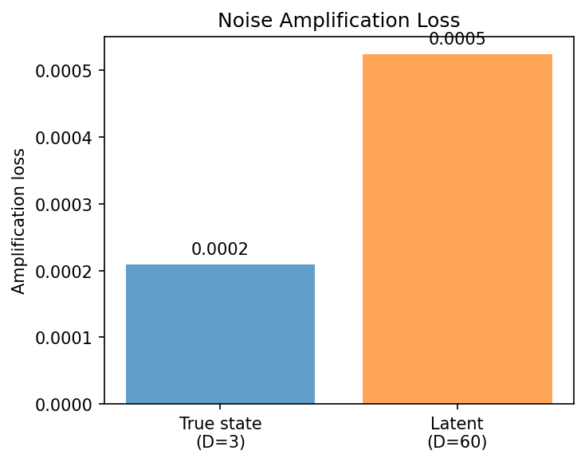
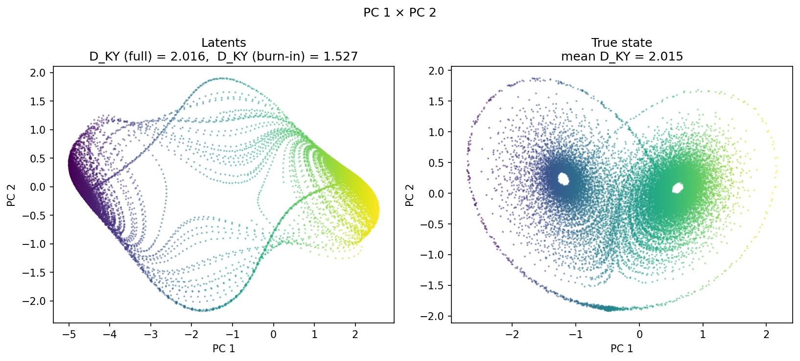
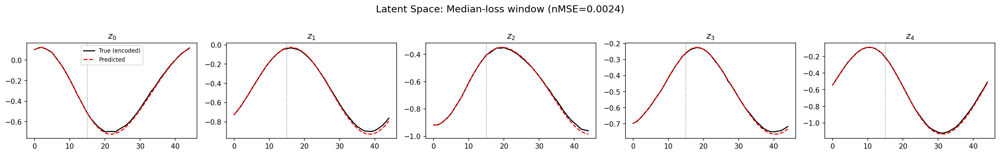
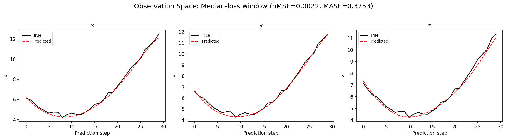
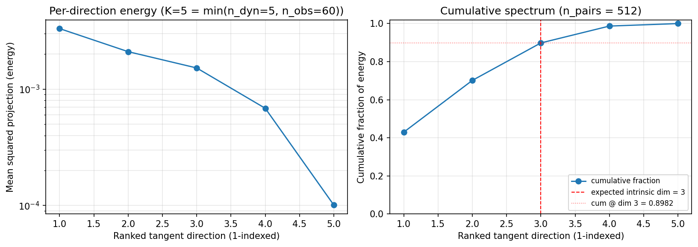
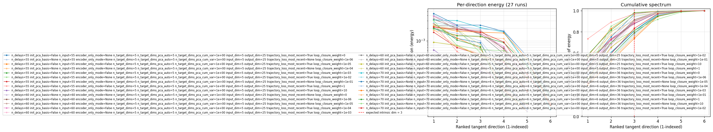
(to be written)
run_analytics stdoutrun_analyticsNo run_id provided — selecting best run from group 'lorenz_partial_additive_mse_uniform_p30_obsnoise001_top3nd_init15_autodim__lc_sweep' ...
Found 29 total runs in JacobianODE/Lorenz_INDpartial_NDInitSweep_autodim_D1_NormTrue__JacobianODE (group=lorenz_partial_additive_mse_uniform_p30_obsnoise001_top3nd_init15_autodim__lc_sweep)
All runs (state, loop_closure_weight, tangent_entropy_weight, kl_dyn_weight):
l6f9rzk6: state=finished, lc=0.0, te=0.0, kl_dyn=0.0
qyfxzazt: state=finished, lc=1e-06, te=0.0, kl_dyn=0.0
eyur9uex: state=finished, lc=1e-05, te=0.0, kl_dyn=0.0
229ofgpv: state=finished, lc=0.0001, te=0.0, kl_dyn=0.0
yrypeeyh: state=finished, lc=0.001, te=0.0, kl_dyn=0.0
x62j5byr: state=crashed, lc=0.01, te=0.0, kl_dyn=0.0
yk2sxjx6: state=finished, lc=0.1, te=0.0, kl_dyn=0.0
yjz42phd: state=finished, lc=1.0, te=0.0, kl_dyn=0.0
lrtjbb8d: state=finished, lc=10.0, te=0.0, kl_dyn=0.0
g6ig1rsm: state=finished, lc=0.0, te=0.0, kl_dyn=0.0
kgfm0hy6: state=finished, lc=1e-06, te=0.0, kl_dyn=0.0
vl219t40: state=finished, lc=1e-05, te=0.0, kl_dyn=0.0
ccvot8j5: state=finished, lc=0.0001, te=0.0, kl_dyn=0.0
sgl4a6p9: state=finished, lc=0.001, te=0.0, kl_dyn=0.0
76gyhpe1: state=finished, lc=0.01, te=0.0, kl_dyn=0.0
sro2qdq3: state=finished, lc=0.1, te=0.0, kl_dyn=0.0
9082oh08: state=finished, lc=10.0, te=0.0, kl_dyn=0.0
1zjwpxqk: state=finished, lc=1.0, te=0.0, kl_dyn=0.0
7k1kdgp0: state=finished, lc=0.0, te=0.0, kl_dyn=0.0
xlnxldo0: state=finished, lc=1e-06, te=0.0, kl_dyn=0.0
rifvxbay: state=finished, lc=1e-05, te=0.0, kl_dyn=0.0
knza6xc2: state=finished, lc=0.0001, te=0.0, kl_dyn=0.0
2w94ck0e: state=finished, lc=0.001, te=0.0, kl_dyn=0.0
d67vr9o2: state=finished, lc=0.01, te=0.0, kl_dyn=0.0
t07oybw5: state=finished, lc=0.1, te=0.0, kl_dyn=0.0
hz822v1x: state=finished, lc=1.0, te=0.0, kl_dyn=0.0
xlsa41f4: state=finished, lc=10.0, te=0.0, kl_dyn=0.0
iswiqlny: state=finished, lc=0.01, te=0.0, kl_dyn=0.0
bwfhf7lf: state=finished, lc=0.01, te=0.0, kl_dyn=0.0
slurm_timeout_min not found in any run config — falling back to 180 min
Including l6f9rzk6 (lc=0.0): use_all_runs=True (state=finished)
Including qyfxzazt (lc=1e-06): use_all_runs=True (state=finished)
Including eyur9uex (lc=1e-05): use_all_runs=True (state=finished)
Including 229ofgpv (lc=0.0001): use_all_runs=True (state=finished)
Including yrypeeyh (lc=0.001): use_all_runs=True (state=finished)
Including x62j5byr (lc=0.01): use_all_runs=True (state=crashed)
Including yk2sxjx6 (lc=0.1): use_all_runs=True (state=finished)
Including yjz42phd (lc=1.0): use_all_runs=True (state=finished)
Including lrtjbb8d (lc=10.0): use_all_runs=True (state=finished)
Including g6ig1rsm (lc=0.0): use_all_runs=True (state=finished)
Including kgfm0hy6 (lc=1e-06): use_all_runs=True (state=finished)
Including vl219t40 (lc=1e-05): use_all_runs=True (state=finished)
Including ccvot8j5 (lc=0.0001): use_all_runs=True (state=finished)
Including sgl4a6p9 (lc=0.001): use_all_runs=True (state=finished)
Including 76gyhpe1 (lc=0.01): use_all_runs=True (state=finished)
Including sro2qdq3 (lc=0.1): use_all_runs=True (state=finished)
Including 9082oh08 (lc=10.0): use_all_runs=True (state=finished)
Including 1zjwpxqk (lc=1.0): use_all_runs=True (state=finished)
Including 7k1kdgp0 (lc=0.0): use_all_runs=True (state=finished)
Including xlnxldo0 (lc=1e-06): use_all_runs=True (state=finished)
Including rifvxbay (lc=1e-05): use_all_runs=True (state=finished)
Including knza6xc2 (lc=0.0001): use_all_runs=True (state=finished)
Including 2w94ck0e (lc=0.001): use_all_runs=True (state=finished)
Including d67vr9o2 (lc=0.01): use_all_runs=True (state=finished)
Including t07oybw5 (lc=0.1): use_all_runs=True (state=finished)
Including hz822v1x (lc=1.0): use_all_runs=True (state=finished)
Including xlsa41f4 (lc=10.0): use_all_runs=True (state=finished)
Including iswiqlny (lc=0.01): use_all_runs=True (state=finished)
Including bwfhf7lf (lc=0.01): use_all_runs=True (state=finished)
Found 29 effectively-done sweep runs:
loop_closure_weight=0.0, tangent_entropy_weight=0.0, kl_dyn_weight=0.0 -> run_id=7k1kdgp0
loop_closure_weight=0.0, tangent_entropy_weight=0.0, kl_dyn_weight=0.0 -> run_id=g6ig1rsm
loop_closure_weight=0.0, tangent_entropy_weight=0.0, kl_dyn_weight=0.0 -> run_id=l6f9rzk6
loop_closure_weight=1e-06, tangent_entropy_weight=0.0, kl_dyn_weight=0.0 -> run_id=kgfm0hy6
loop_closure_weight=1e-06, tangent_entropy_weight=0.0, kl_dyn_weight=0.0 -> run_id=qyfxzazt
loop_closure_weight=1e-06, tangent_entropy_weight=0.0, kl_dyn_weight=0.0 -> run_id=xlnxldo0
loop_closure_weight=1e-05, tangent_entropy_weight=0.0, kl_dyn_weight=0.0 -> run_id=eyur9uex
loop_closure_weight=1e-05, tangent_entropy_weight=0.0, kl_dyn_weight=0.0 -> run_id=rifvxbay
loop_closure_weight=1e-05, tangent_entropy_weight=0.0, kl_dyn_weight=0.0 -> run_id=vl219t40
loop_closure_weight=0.0001, tangent_entropy_weight=0.0, kl_dyn_weight=0.0 -> run_id=229ofgpv
loop_closure_weight=0.0001, tangent_entropy_weight=0.0, kl_dyn_weight=0.0 -> run_id=ccvot8j5
loop_closure_weight=0.0001, tangent_entropy_weight=0.0, kl_dyn_weight=0.0 -> run_id=knza6xc2
loop_closure_weight=0.001, tangent_entropy_weight=0.0, kl_dyn_weight=0.0 -> run_id=2w94ck0e
loop_closure_weight=0.001, tangent_entropy_weight=0.0, kl_dyn_weight=0.0 -> run_id=sgl4a6p9
loop_closure_weight=0.001, tangent_entropy_weight=0.0, kl_dyn_weight=0.0 -> run_id=yrypeeyh
loop_closure_weight=0.01, tangent_entropy_weight=0.0, kl_dyn_weight=0.0 -> run_id=76gyhpe1
loop_closure_weight=0.01, tangent_entropy_weight=0.0, kl_dyn_weight=0.0 -> run_id=bwfhf7lf
loop_closure_weight=0.01, tangent_entropy_weight=0.0, kl_dyn_weight=0.0 -> run_id=d67vr9o2
loop_closure_weight=0.01, tangent_entropy_weight=0.0, kl_dyn_weight=0.0 -> run_id=iswiqlny
loop_closure_weight=0.01, tangent_entropy_weight=0.0, kl_dyn_weight=0.0 -> run_id=x62j5byr
loop_closure_weight=0.1, tangent_entropy_weight=0.0, kl_dyn_weight=0.0 -> run_id=sro2qdq3
loop_closure_weight=0.1, tangent_entropy_weight=0.0, kl_dyn_weight=0.0 -> run_id=t07oybw5
loop_closure_weight=0.1, tangent_entropy_weight=0.0, kl_dyn_weight=0.0 -> run_id=yk2sxjx6
loop_closure_weight=1.0, tangent_entropy_weight=0.0, kl_dyn_weight=0.0 -> run_id=1zjwpxqk
loop_closure_weight=1.0, tangent_entropy_weight=0.0, kl_dyn_weight=0.0 -> run_id=hz822v1x
loop_closure_weight=1.0, tangent_entropy_weight=0.0, kl_dyn_weight=0.0 -> run_id=yjz42phd
loop_closure_weight=10.0, tangent_entropy_weight=0.0, kl_dyn_weight=0.0 -> run_id=9082oh08
loop_closure_weight=10.0, tangent_entropy_weight=0.0, kl_dyn_weight=0.0 -> run_id=lrtjbb8d
loop_closure_weight=10.0, tangent_entropy_weight=0.0, kl_dyn_weight=0.0 -> run_id=xlsa41f4
Dropping 2 run(s) with no checkpoint dir: ['d67vr9o2', 'iswiqlny']
n_dims=70, n_latent=70, n_dyn=6, dt=0.0150
run=7k1kdgp0: DiagnosticMetrics(one_step_mase=0.5272175073623657, loop_closure_loss=2.073434352874756, fast_eigenvalue_fraction=0.0, trajectory_val_loss=0.0006651878356933594) (from W&B history)
run=g6ig1rsm: DiagnosticMetrics(one_step_mase=0.5068936944007874, loop_closure_loss=3.9691355228424072, fast_eigenvalue_fraction=0.0, trajectory_val_loss=0.0008542881696484983) (from W&B history)
run=l6f9rzk6: DiagnosticMetrics(one_step_mase=1.153707504272461, loop_closure_loss=1.03719961643219, fast_eigenvalue_fraction=0.0, trajectory_val_loss=0.00037939244066365063) (from W&B history)
run=kgfm0hy6: DiagnosticMetrics(one_step_mase=0.5835298299789429, loop_closure_loss=1.9103918075561523, fast_eigenvalue_fraction=0.0, trajectory_val_loss=0.0004368698282632977) (from W&B history)
run=qyfxzazt: DiagnosticMetrics(one_step_mase=1.2526730298995972, loop_closure_loss=0.7882382869720459, fast_eigenvalue_fraction=0.0, trajectory_val_loss=0.002047427464276552) (from W&B history)
run=xlnxldo0: DiagnosticMetrics(one_step_mase=0.6119195818901062, loop_closure_loss=1.6326769590377808, fast_eigenvalue_fraction=0.0, trajectory_val_loss=0.0008808749844320118) (from W&B history)
run=eyur9uex: DiagnosticMetrics(one_step_mase=1.1789470911026, loop_closure_loss=0.2904985547065735, fast_eigenvalue_fraction=0.0, trajectory_val_loss=0.0004004664078820497) (from W&B history)
run=rifvxbay: DiagnosticMetrics(one_step_mase=0.5269691348075867, loop_closure_loss=0.48743245005607605, fast_eigenvalue_fraction=0.0, trajectory_val_loss=0.0013604818377643824) (from W&B history)
run=vl219t40: DiagnosticMetrics(one_step_mase=0.512972354888916, loop_closure_loss=0.42069023847579956, fast_eigenvalue_fraction=0.0, trajectory_val_loss=0.0009331138571724296) (from W&B history)
run=229ofgpv: DiagnosticMetrics(one_step_mase=1.1494345664978027, loop_closure_loss=0.05774739384651184, fast_eigenvalue_fraction=0.0, trajectory_val_loss=0.0015212014550343156) (from W&B history)
run=ccvot8j5: DiagnosticMetrics(one_step_mase=0.5188680291175842, loop_closure_loss=0.08863265067338943, fast_eigenvalue_fraction=0.0, trajectory_val_loss=0.00039758862112648785) (from W&B history)
run=knza6xc2: DiagnosticMetrics(one_step_mase=0.49802762269973755, loop_closure_loss=0.06562000513076782, fast_eigenvalue_fraction=0.0, trajectory_val_loss=0.0010626022703945637) (from W&B history)
run=2w94ck0e: DiagnosticMetrics(one_step_mase=0.627334713935852, loop_closure_loss=0.03179620951414108, fast_eigenvalue_fraction=0.0, trajectory_val_loss=0.0009586970554664731) (from W&B history)
run=sgl4a6p9: DiagnosticMetrics(one_step_mase=0.5898917317390442, loop_closure_loss=0.030728256329894066, fast_eigenvalue_fraction=0.0, trajectory_val_loss=0.0005636319401673973) (from W&B history)
run=yrypeeyh: DiagnosticMetrics(one_step_mase=1.1645361185073853, loop_closure_loss=0.011410634964704514, fast_eigenvalue_fraction=0.0, trajectory_val_loss=0.0004837898595724255) (from W&B history)
run=76gyhpe1: DiagnosticMetrics(one_step_mase=0.6193928718566895, loop_closure_loss=0.0035017402842640877, fast_eigenvalue_fraction=0.0, trajectory_val_loss=0.0008976683020591736) (from W&B history)
run=bwfhf7lf: DiagnosticMetrics(one_step_mase=0.6447139382362366, loop_closure_loss=0.004609482828527689, fast_eigenvalue_fraction=0.0, trajectory_val_loss=0.0012828323524445295) (from W&B history)
run=x62j5byr: DiagnosticMetrics(one_step_mase=1.1944445371627808, loop_closure_loss=0.002192852785810828, fast_eigenvalue_fraction=0.0, trajectory_val_loss=0.0007749188225716352) (from W&B history)
run=sro2qdq3: DiagnosticMetrics(one_step_mase=0.5254005193710327, loop_closure_loss=0.0003926653880625963, fast_eigenvalue_fraction=0.0, trajectory_val_loss=0.002162870019674301) (from W&B history)
run=t07oybw5: DiagnosticMetrics(one_step_mase=0.7859870791435242, loop_closure_loss=0.0014693167759105563, fast_eigenvalue_fraction=0.0, trajectory_val_loss=0.002387994434684515) (from W&B history)
run=yk2sxjx6: DiagnosticMetrics(one_step_mase=1.1547685861587524, loop_closure_loss=0.00034821100416593254, fast_eigenvalue_fraction=0.0, trajectory_val_loss=0.0019012041157111526) (from W&B history)
run=1zjwpxqk: DiagnosticMetrics(one_step_mase=0.769800066947937, loop_closure_loss=3.8680402212776244e-05, fast_eigenvalue_fraction=0.0, trajectory_val_loss=0.0037716550286859274) (from W&B history)
run=hz822v1x: DiagnosticMetrics(one_step_mase=0.8422066569328308, loop_closure_loss=3.570048284018412e-05, fast_eigenvalue_fraction=0.0, trajectory_val_loss=0.007267741020768881) (from W&B history)
run=yjz42phd: DiagnosticMetrics(one_step_mase=1.185123324394226, loop_closure_loss=1.2144014363002498e-05, fast_eigenvalue_fraction=0.0, trajectory_val_loss=0.0024006839375942945) (from W&B history)
run=9082oh08: DiagnosticMetrics(one_step_mase=0.930195689201355, loop_closure_loss=1.7958481066671084e-06, fast_eigenvalue_fraction=0.0, trajectory_val_loss=0.005566663108766079) (from W&B history)
run=lrtjbb8d: DiagnosticMetrics(one_step_mase=1.5020159482955933, loop_closure_loss=6.777521775802597e-06, fast_eigenvalue_fraction=0.0, trajectory_val_loss=0.003579792333766818) (from W&B history)
run=xlsa41f4: DiagnosticMetrics(one_step_mase=0.6718382239341736, loop_closure_loss=2.624330818434828e-06, fast_eigenvalue_fraction=0.0, trajectory_val_loss=0.014725501649081707) (from W&B history)
Ranking method: best_traj_loss
Best run ID: ccvot8j5
Best loop_closure_weight: 0.0001
Best tangent_entropy_weight: 0.0
Best kl_dyn_weight: 0.0
Best traj loss: 0.000398
Criteria applied: ['C1', 'C2', 'C3']
Surviving: 17 / 27
Auto-selected run_id: ccvot8j5
======================================================================
PARETO FRONTIER RUNS (8 runs)
======================================================================
Run ID LC Loss Traj Val Loss
------------ -------------- --------------
9082oh08 0.000002 0.005567
lrtjbb8d 0.000007 0.003580
yjz42phd 0.000012 0.002401
yk2sxjx6 0.000348 0.001901
x62j5byr 0.002193 0.000775
yrypeeyh 0.011411 0.000484
ccvot8j5 0.088633 0.000398 <-- selected
l6f9rzk6 1.037200 0.000379
======================================================================
RANKING METHOD COMPARISON (over 17 survivors)
======================================================================
Method Run ID LC Loss Traj Val Loss
---------------------- ------------ -------------- --------------
best_traj_loss ccvot8j5 0.088633 0.000398 <-- active
pareto_knee 76gyhpe1 0.003502 0.000898
geo_rank ccvot8j5 0.088633 0.000398
minimax_rank 76gyhpe1 0.003502 0.000898
geo_log_score ccvot8j5 0.088633 0.000398
minimax_log_score sro2qdq3 0.000393 0.002163
======================================================================
Loading run ccvot8j5 from JacobianODE/Lorenz_INDpartial_NDInitSweep_autodim_D1_NormTrue__JacobianODE ...
Train dataset shape: torch.Size([24112, 45, 60])
Validation dataset shape: torch.Size([7672, 45, 60])
Test dataset shape: torch.Size([3288, 45, 60])
Train trajectories dataset shape: torch.Size([22, 1141, 60])
Validation trajectories dataset shape: torch.Size([7, 1141, 60])
Test trajectories dataset shape: torch.Size([3, 1141, 60])
Loading checkpoint epoch=144-step=29000.ckpt...
Computing reconstruction ...
Computing MASE ...
Teacher-forced MASE: 0.5117
Free-running MASE: 0.6011
Computing latent utilization ...
Entropy-based utilization: 0.909
Null subspace mean RMS: 5.686168e-02
Computing Lyapunov exponents ...
Computing full-trajectory Lyapunov (3 test trajs, T=1141) ...
Predicted Lyapunov exponents (batch+burn-in, 128 windowed trajs):
λ_1 = +0.2421 ± 0.3857
λ_2 = -0.2117 ± 0.2570
λ_3 = -4.9525 ± 0.5028
λ_4 = -5.7110 ± 0.8659
λ_5 = -8.4681 ± 2.1470
Predicted Lyapunov exponents (full-length, 3 test trajs):
λ_1 = +0.1474 ± 0.0364
λ_2 = -0.0649 ± 0.0430
λ_3 = -5.2711 ± 0.0159
λ_4 = -6.0808 ± 0.0996
λ_5 = -8.9178 ± 0.0696
Empirical Lyapunov exponents (mean ± std):
λ_1 = +0.3846 ± 0.0251
λ_2 = -0.1716 ± 0.0444
λ_3 = -13.8799 ± 0.0398
Mean KY dim (predicted): 2.016 ± 0.004
Mean KY dim (empirical): 2.015 ± 0.002
Mean KY dim (burn-in): 1.527 ± 0.732
Computing prediction windows ...
Windows: 111 — nMSE min=0.0012, median=0.0022, mean=0.0041, max=0.0461
Computing long-trajectory free-running rollouts ...
Computing encoder/decoder Jacobians ...
encoder_jacobian: (128, 60, 60)
decoder_jacobian: (128, 60, 60)
Computing amplification loss ...
Amplification loss — True state: 0.000210
Amplification loss — Latent: 0.000525
Computing tangent space spectrum ...